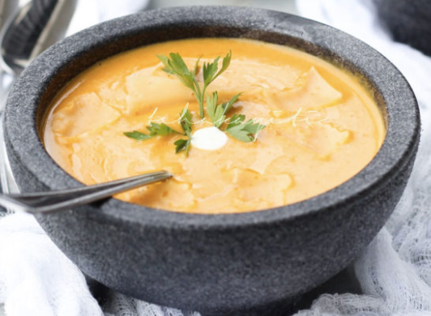

Haitian Pumpkin Soup

Description
The Haitian pumpkin soup which is part of the
Unesco Intangible Cultural Heritage, is, for sure, made of pumpkin to which we add meat along with bornes, vegetables, and
some herbal spices which make it very delicious. Some variant of that soup contains even beeans and some other food very good
for health
Some people like it with additional complementary roots like potatoes, sweet potatoes, taros and even with some along with
some long hot green or colorful chili (pepper) including the famous local pepper "piment zwazo", an andemic very small red
pepper which is very hot as well.
Ingredients
- Pumpkin (a mature one)
- Meat (recommended beef, goat, lambj)
- Vegetables
- Pepper (based on your preference
- Spices (persil, garlic, ginger, cinamon etc..)
- Roots as per preference (potatoes, sweet potatoes etc...)
- Salt (a littele bit, protect your health)
- Oil (a littele bit, protect your health)
Steps
- Boil your pumpkin deeply (use a presure cooker for fast result)
- While your Pumpkin is being boiled, upon thoroughly seasoning it, in a bit of oil cook your meat
in separate pressure cooker or wait for it to be free
- When both pumpkin and meat are cooked, mix them and add the the vegetables,the roots and other optional Ingredients
(pepper, beans etc...)
- Add the whole mixture to fire and let it cool at medium level for 10 to 15 minutes. In th meantime,
add a bit of salt